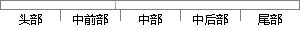

用户功能需求则为小程序搭了一个框架，通过此可以大致了解到整个系统的功能。
片段位置图

相似结果|
1
原句片段：用户功能需求则为小程序搭了一个框架，通过此可以大致了解到整个系统的功能。
相似片段 1：凭借轻便化、简易化的特点,能满足用户大量的服务场景...一个服务器端开发,能满足一般需求的小程序成本大致...App可以实现完整功能; 受小程序开发框架、组件以及微信...
|
※ 片段修改建议 ※
近似词参考：- 功能：功效
- 程序：法式 步伐
- 通过：经由过程
- 大致：大抵
- 了解：领会 认识 相识
- 整个：全部
- 系统：体系
- 功能：功效
系统自动生成语句：用户功效需求则为小法式搭了一个框架，经由过程此可以大抵领会到全部体系的功效。
注：本片段修改建议为系统自动生成，仅供参考。